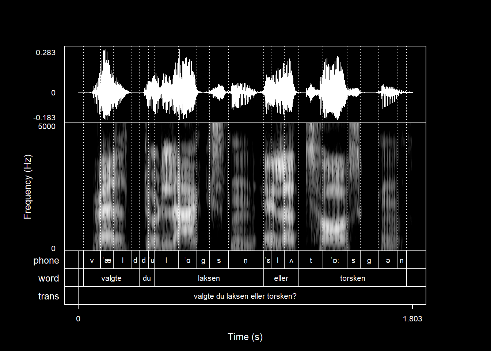

praatpicture('ex/ex.wav',
ps = 18)10 Base R graphics options
praatpicture uses base R plotting functionality, which means that most of the base R plotting arguments are also available in praatpicture (although some aren’t, in case they’re already being used by internal functions). Here, I give an incomplete overview of what this allows users to do.
10.1 Global font size
You may be used to using the cex arguments (including cex.main, cex.axis etc) to control font size in base R plots. These mostly aren’t available to praatpicture for various reasons, mostly because they’re being used internally by the praatpicture-functions, but you can use the ps argument (short for point size) to control font size globally.
Here’s a plot with ps = 18, a fairly large font size:
And here’s one with ps = 6, a very small font size:
praatpicture('ex/ex.wav',
ps = 6)
10.2 Global coloring options
We’ve already seen that you have great flexibility with coloring of various elements in praatpicture. There are also some global coloring options available. For example, the bg argument controls the background color. For the Praat feeling, you could set it to pink:
praatpicture('ex/ex.wav',
bg = 'pink')This will not affect the “background color” of spectrograms associated with low energy regions, but you can always control that with the spec_color argument:
praatpicture('ex/ex.wav',
bg = 'pink',
spec_color = c('pink', 'black'))You can also use the col argument. Usually, this changes the color of mostly everything in a plot globally, but in this case it only changes the color of things that aren’t user controlled (mainly axis labels and boxes). Here is a plot with col = 'blue':
praatpicture('ex/ex.wav',
col = 'blue')The color of axis numbers is controlled with the col.axis argument:
praatpicture('ex/ex.wav',
col = 'blue',
col.axis = 'blue')If you want everything to be blue, you have to manually set all color values:
praatpicture('ex/ex.wav',
col = 'blue',
col.axis = 'blue',
wave_color = 'blue',
spec_color = c('white', 'blue'),
tg_color = 'blue',
tg_focusTierColor = 'blue')A potentially useful consequence of this is the ability to make “dark mode” pictures, by setting the background color to black and all other colors to white:
praatpicture('ex/ex.wav',
bg = 'black',
col = 'white',
col.axis = 'white',
wave_color = 'white',
spec_color = c('black', 'white'),
tg_color = 'white',
tg_focusTierColor = 'white')
10.3 Fonts and font families
The font argument controls the face of the font in text. If you want everything to be boldface, you can set font (and font.axis) to 2:
praatpicture('ex/ex.wav',
font = 2,
font.axis = 2)A font value of 3 will produce italics:
praatpicture('ex/ex.wav',
font = 3,
font.axis = 3)The family argument globally controls the font family. There are a few different ones available to R. For more of a Praat feeling, you can use a serif font:
praatpicture('ex/ex.wav',
family = 'serif')If you use the extrafont library, you can use specify any font available on your computer. This is nice if for example you want to publish in Glossa or Laboratory Phonology, and you want your plots to use the same font as the article text:
library(extrafont)Registering fonts with Rpraatpicture('ex/ex.wav',
family = 'Charis SIL')10.4 Line widths
The lwd arguments can be used to control line widths globally. You can use this to produce a plot that really stands out.
praatpicture('ex/ex.wav',
lwd = 2)The lty argument controls the global line type. You could use this if you wanted, say, dashed lines for all plot elements (although you probably don’t want this!)
10.5 Saving plots
You can save plots however you usually like to do this. If you use RStudio, you can use the Export function from the plotting window in the GUI, although my recommendation would be not to do so – plots created in this way typically don’t look very nice. You can also use png(), pdf(), tiff(), and related functions to your heart’s content.